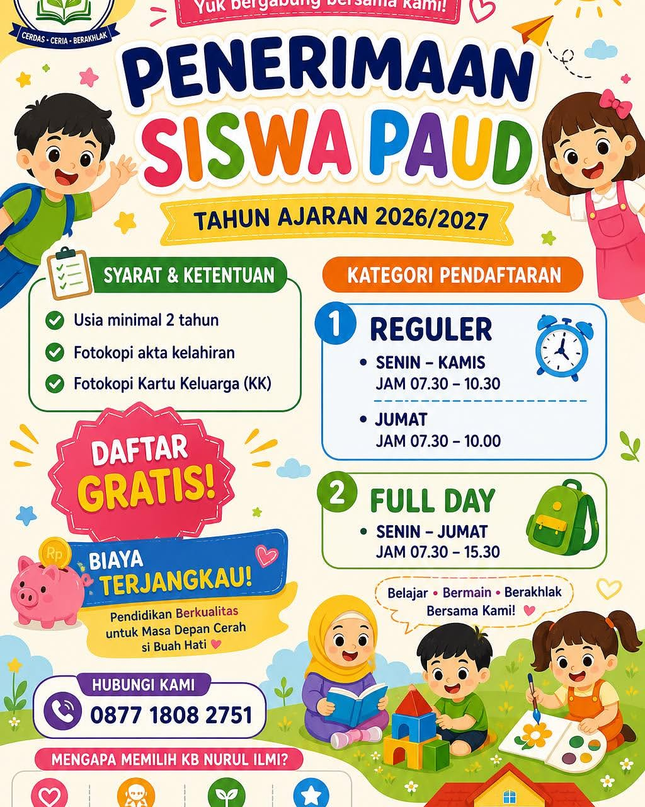

Pengumuman
Tahun Ajaran Baru
Penerimaan Peserta Didik Baru (PPDB) PAUD & KB Dibuka: Kuota Terbatas!
Pendaftaran murid baru PAUD-KB Nurul Ilmi Sumberadi kini dapat dilakukan secara langsung di sekolah maupun melalui formulir online di website ini.